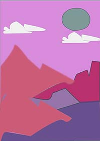

Na ovoj stranici se prikazuju sve vježbe koje smo radili na kolegiju Digitalni-multimedij1.
U prvoj vježbi smo trebali osmisliti svoj font u programu FontForge,moj font možete vidjeti na početnoj stranici(index1).
U drugoj vježbi smo radili Bazierove krivulje te smo sa svojim fontom od prošle vježbe ispisali tekst i napravili masku.
Treću vježbu smo također radili u programu inkscape,trebali smoizvesti vlastiti primjer sa multipliciranim objektima nacrtanima sa alatom Pen.
U četvrtoj vježbi smo koristili tehnike spajanja i izrezivanja objekata i primjenjivali različite vrste gradijenata i transparencije.
U prvom projektnom zadatku smo sve vježbe trebali sklopiti u jednu kompaktnu sliku.
U petoj vježbi smo počeli sa Photoshopom.Prvi zadatak nam je bio tehnika retuširanja.
U šestoj vježbi smo rdili koloriranje.Mijenjali smo boju određenim dijelovima slike.
U sedmoj vježbi smo radili fotomontažu.Glavni cilj je biockombiniranje više fotografija izrezivanjem dijelova različitih slika i spajanjem u jednu cjelinu.
U drugom projektnom zadatku smo sve vježbe trebali sklopiti u jednu kompaktnu sliku.
u osmoj vježbi smo radili u programu Shotcut.Prva tema nam je bio kinemagraf,što znači spajanje pokretne i statične slike.
Tema devete vježbe je bila rezanje i spajanje video isječaka iz više izvora,video efekti,brisanje i dodavanje zvuka,dodavanje i obrada teksta.
U 10. i 11. vježbi smo trebali napraviti svoju web stranicu,te je uploudati na GitHub.